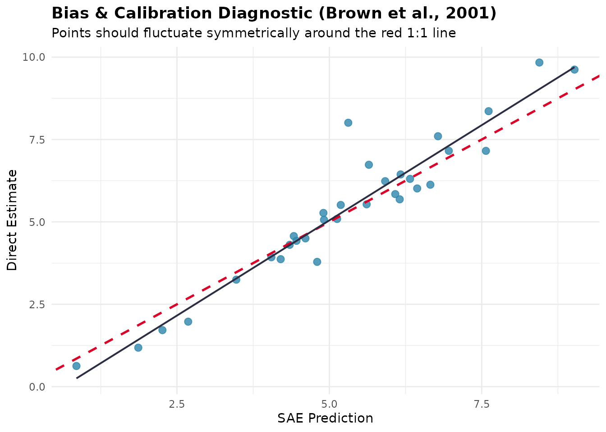
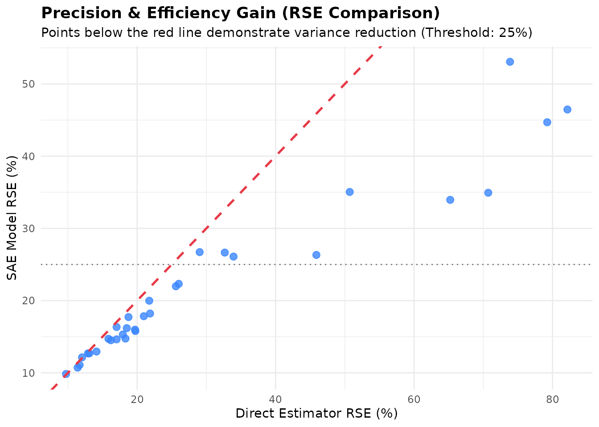
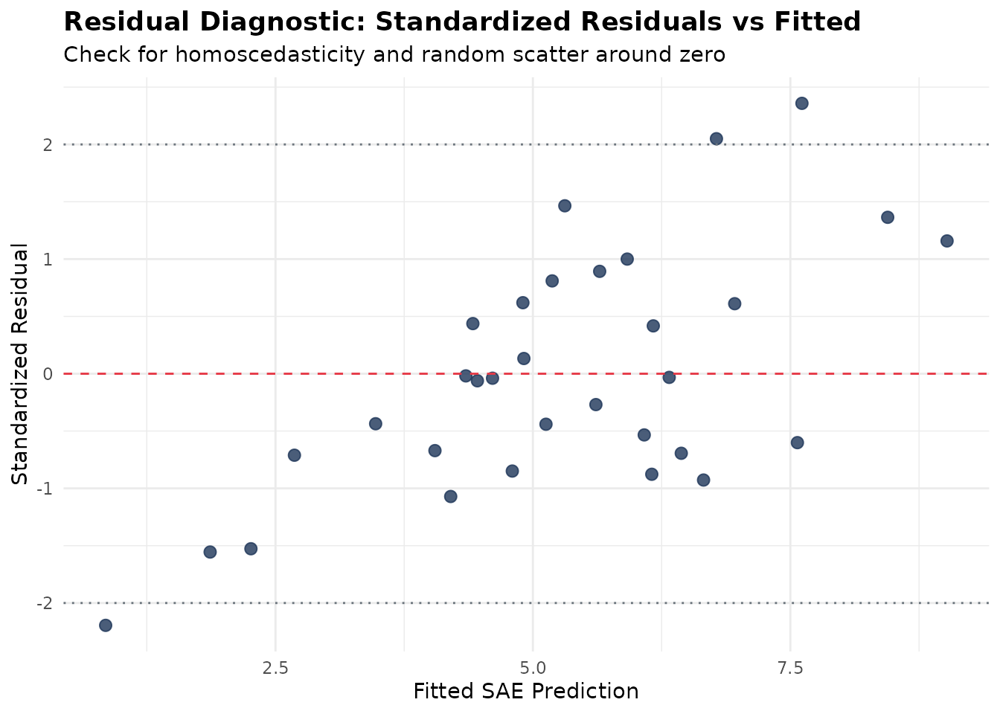
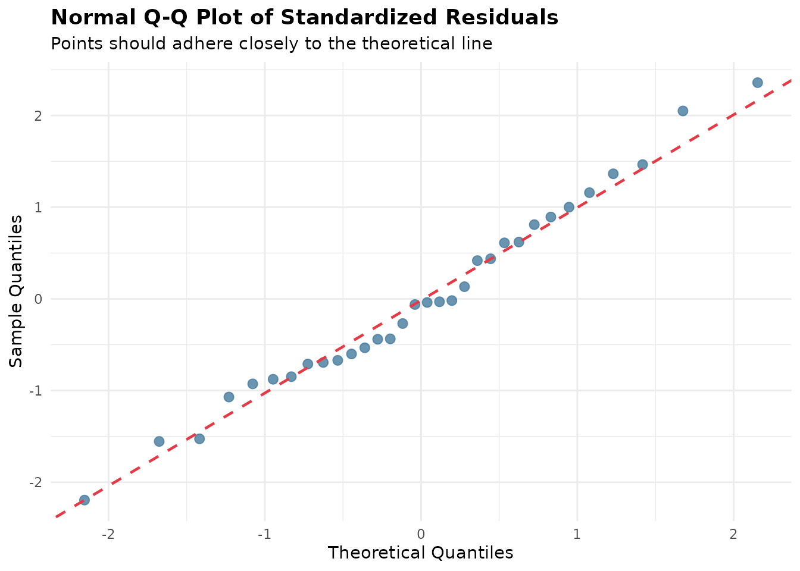
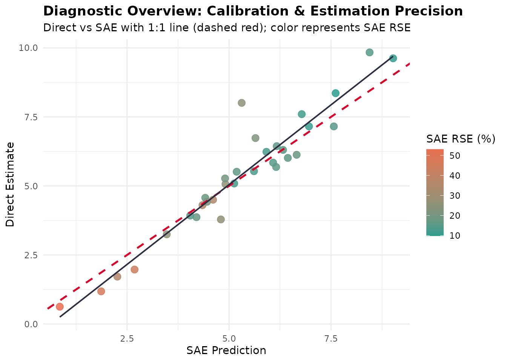

Diagnostik Model dan Analisis Residual
Source:vignettes/articles/id/model-diagnostics.Rmd
model-diagnostics.RmdTerjemahan dari versi bahasa Inggris. Penjelasan istilah ada di Daftar Istilah.
Pendahuluan
Dalam small area estimation (SAE), model-based estimator meminjam informasi antardomain dan antarwaktu untuk meningkatkan presisi dibandingkan direct estimator survei. Namun, asumsi model membawa risiko kesalahan spesifikasi model, bias, dan shrinkage yang tidak tepat.
Untuk menjawab tantangan ini, fastsae menyediakan
kerangka diagnostik terpadu yang berpusat pada fungsi
diagnose() dan metode S3 autoplot() khusus
untuk visualisasinya. Kerangka ini mengevaluasi model EBLUP
frequentist berbasis C++ (eblup_fh,
eblup_sfh, eblup_stfh, eblup_bhf)
maupun model HB Bayesian berbasis INLA
(hb_area).
Kriteria Diagnostik Utama
Alur diagnostik mengevaluasi empat dimensi mendasar dari kualitas model SAE:
- Precision Gain dan RSE Reduction: Mengukur perbaikan Relative Standard Error () dibandingkan direct estimator survei. Mengevaluasi apakah area memenuhi ambang keandalan statistik resmi (umumnya atau ).
-
Statistik Goodness-of-Fit (Brown dkk., 2001):
Menghitung statistik diagnostik Chi-square
pada domain yang tersampel:
lalu membandingkannya dengan
.
Hanya nilai yang besar yang menunjukkan bahwa estimasi model berbeda
dari direct estimator lebih jauh daripada ketidakpastiannya, sehingga
p-value dihitung pada ekor atas (seperti di
emdi). Statistik ini mengabaikan korelasi positif antara dan , sehingga bersifat konservatif: pada model yang benar, biasanya jauh di bawah . -
Diagnostik Bias (Brown dkk., 2001): Regresi direct
estimator terhadap estimasi model,
dilaporkan secara deskriptif (dengan
autoplot(type = "calibration")) untuk mencari penyimpangan sistematis. Regresi ini tidak dipakai sebagai uji formal untuk : pada shrinkage estimator seperti EBLUP, slope melebihi 1 walaupun modelnya benar (sekitar untuk variasi yang tidak dijelaskan oleh covariate), sehingga uji semacam itu akan menolak model yang benar. - Spatial Autocorrelation pada Residual (Moran’s I): Memeriksa apakah spatial autocorrelation telah sepenuhnya ditangkap oleh random effect model. Residual spatial clustering yang signifikan menunjukkan masih ada pola spatial yang belum dimodelkan.
Contoh Praktis: Mendiagnosis Model Fay-Herriot
Kita mendemonstrasikan alur diagnostik dengan data bawaan
mys (Rata-rata Lama Sekolah di 42 kabupaten/kota):
1. Mengestimasi Model dan Menjalankan diagnose()
library(fastsae)
library(ggplot2)
data("mys")
data("mys_proxmat")
# Fit Area-Level Fay-Herriot model
fit_fh <- eblup_fh(
formula = y ~ x1 + x2 + x3,
vardir = ~vardir,
data = na.omit(mys),
method = "REML",
print_result = FALSE
)
# Run comprehensive diagnostic checks
diag_fh <- diagnose(fit_fh, W = mys_proxmat[!is.na(mys$y), !is.na(mys$y)])
print(diag_fh)2. Memeriksa Komponen Diagnostik
Objek fastsae_diagnose yang dihasilkan menyediakan akses
terstruktur ke setiap domain diagnostik:
# Efficiency gains
diag_fh$precision
#> $rse_threshold
#> [1] 25
#>
#> $prop_reliable
#> [1] 68.75
#>
#> $mean_direct_rse
#> [1] 29.49003
#>
#> $median_direct_rse
#> [1] 19.72062
#>
#> $mean_sae_rse
#> [1] 21.63848
#>
#> $median_sae_rse
#> [1] 17.03635
#>
#> $eff_ratio_summary
#> Min Q1.25% Median Mean Q3.75% Max
#> 1.017672 1.194006 1.291102 1.529910 1.491337 3.907487
#>
#> $prop_gain
#> [1] 100
# Calibration test results
diag_fh$brown_test
#> $bias_regression
#> $bias_regression$alpha
#> [1] -0.7316943
#>
#> $bias_regression$beta
#> [1] 1.155679
#>
#> $bias_regression$se_alpha
#> [1] 0.363461
#>
#> $bias_regression$se_beta
#> [1] 0.0652052
#>
#> $bias_regression$r_squared
#> [1] 0.9128237
#>
#> $bias_regression$n
#> [1] 32
#>
#>
#> $goodness_of_fit
#> $goodness_of_fit$w_stat
#> [1] 4.525856
#>
#> $goodness_of_fit$df
#> [1] 32
#>
#> $goodness_of_fit$crit
#> [1] 46.19426
#>
#> $goodness_of_fit$p_value
#> [1] 1
#>
#> $goodness_of_fit$is_good_fit
#> [1] TRUE
# Moran's I spatial test on residuals
diag_fh$spatial_test
#> $moran_I
#> [1] -0.1196823
#>
#> $expected_I
#> [1] -0.03225806
#>
#> $sd_I
#> [1] 0.1105189
#>
#> $z_stat
#> [1] -0.7910343
#>
#> $p_value
#> [1] 0.428924
#>
#> $no_residual_autocorrelation
#> [1] TRUEDiagnostik Visual dengan autoplot()
fastsae mengimplementasikan beberapa tipe visualisasi
ggplot2 khusus untuk objek fastsae_diagnose:
1. Calibration Plot (type = "calibration")
Memplot direct estimator survei terhadap prediksi model beserta garis identitas 1:1 dan regresi kalibrasi hasil estimasi:
autoplot(diag_fh, type = "calibration")
2. Perbandingan Presisi (type = "rse")
Memvisualisasikan penurunan Relative Standard Error untuk setiap domain:
autoplot(diag_fh, type = "rse")
3. Diagnostik Residual (type = "residuals" dan
type = "qq")
Periksa standardized residual terhadap nilai terprediksi untuk mendeteksi heteroscedasticity, ketidaklinearan, atau pencilan:
autoplot(diag_fh, type = "residuals")
autoplot(diag_fh, type = "qq")
4. Combined Diagnostic Dashboard (type = "all")
Menghasilkan tampilan diagnostik terpadu yang merangkum kalibrasi dan peningkatan presisi:
autoplot(diag_fh, type = "all")
Mendiagnosis Model Bayesian Spatio-Temporal
Fungsi diagnose() yang sama dapat langsung dipakai pada
model Bayesian yang diestimasi dengan hb_area():
data("sim_area", package = "fastsae")
# Fit Spatial EBP model with BYM2 prior
fit_hb <- hb_area(
formula = y_gaussian ~ x1 + x2,
data = sim_area,
vardir = "vardir",
spatial = "bym2",
W = create_weights(cbind(sim_area$x_coord, sim_area$y_coord), method = "knn", k = 4),
print_result = FALSE
)
# Diagnose Bayesian model
diag_hb <- diagnose(fit_hb)
diag_hb$precision
#> $rse_threshold
#> [1] 25
#>
#> $prop_reliable
#> [1] 64.28571
#>
#> $mean_direct_rse
#> [1] 103.231
#>
#> $median_direct_rse
#> [1] 17.64954
#>
#> $mean_sae_rse
#> [1] 70.49315
#>
#> $median_sae_rse
#> [1] 19.57027
#>
#> $eff_ratio_summary
#> Min Q1.25% Median Mean Q3.75% Max
#> 1.108100 1.238707 1.281716 1.288164 1.357667 1.459160
#>
#> $prop_gain
#> [1] 100
diag_hb$status
#> [1] "WARNING: High proportions of domains with RSE >= threshold."Daftar Pustaka
- Brown, G., Chambers, R., Heady, P., & Heasman, D. (2001). Evaluation of small area estimation methods: An application to unemployment estimates from the UK LFS. Proceedings of Statistics Canada Symposium 2001: Achieving Data Quality in a Statistical Agency.
- Fay, R. E., & Herriot, R. A. (1979). Estimates of income for small places: An application of James-Stein procedures to Census data. Journal of the American Statistical Association, 74(366), 269–277.
- Rao, J. N. K., & Molina, I. (2015). Small Area Estimation (2nd ed.). John Wiley & Sons.